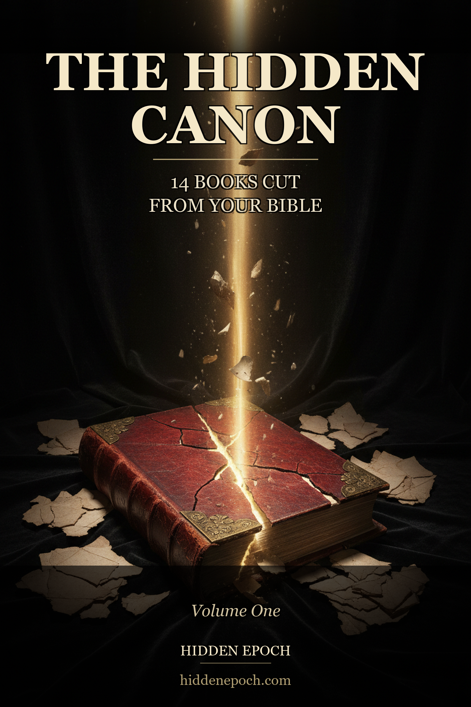

14 books the early church cut, hid, or condemned. Enoch. Jubilees. Giants. Thomas. Mary. Judas. Pistis Sophia. The 2 Esdras passage your Bible quietly removed for 900 years. Each one with its manuscript ID, its dated condemnation, and the political reason it was excluded.
Not a translation. Not a devotional. Not a conspiracy theory. The Hidden Canon is the editorial volume your seminary professor would have written if his job didn't depend on not writing it. Each chapter gives you the book's date and place of composition, its canon status across every Christian tradition, the political and theological reasons it was cut, the manuscript IDs and museum holdings, and the patristic citations that prove the suppression is real.
In 397 CE, at the Council of Carthage, a group of North African bishops voted on which Christian writings would be Scripture and which would not. The fourteen books in this volume lost that vote, or were never on the ballot. Some — like Enoch and Jubilees — survived in Ethiopia, where the council had no jurisdiction. Some — like Thomas and Judas — were declared heretical and physically destroyed. Some — like Wisdom of Solomon — sat in the Catholic Old Testament for a thousand years before Luther cut them out in 1534.
What you are taught as "the Bible" is the political compromise of a fourth-century church that had survived the Diocletian persecution, made its peace with Rome, and was no longer comfortable with a Jesus who said the Kingdom of God is inside of you. The fourteen books in this volume are what they removed.
$27.99. One-time payment. Instant PDF delivered to your email. 90 pages, 14 chapters, manuscript receipts cited throughout. DRM-free, personal license.
Stripe checkout · Card or Apple Pay · Refundable within 7 days
The Hidden Canon includes complete public-domain translations of the most-cited passages — including the Watchers narrative from 1 Enoch (R. H. Charles, 1913) — but it is primarily an editorial volume. The value is in the framing: who wrote each book, when, why it was cut, where the manuscripts are now, and which patristic source documents the suppression. If you want every line of every book, buy the academic editions cited in the bibliography. This volume tells you what they mean.
Not yet. This is a digital PDF. A hardcover edition is planned for late 2026.
Within sixty seconds. After payment, our system emails you a personal download link. Check your inbox (and spam folder). Each link is watermarked to your purchase email — do not share it.
If the book isn't what you expected, reply to your order confirmation within seven days. We refund without argument.
Neither. It is an editorial volume on textual history. Christian readers will find it useful as a study of how the canon was formed. Skeptics will find it useful as a study of how doctrinal politics shaped the text. Gnostic, Bogomil, and modern esoteric readers will find it useful because most of their source documents are described here, with citations to the standard scholarly editions.
An independent investigations project covering ancient anomalies, suppressed archaeology, and the textual history of the world's religions. Daily on YouTube, Instagram, and TikTok. Editorial voice: Jordan Vale.
One PDF. Ninety pages. Cited end-to-end. Twenty-seven ninety-nine.
Get The Canon